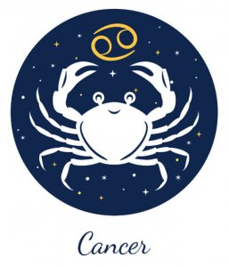

←
CANCER AND LEO COMPATIBILITY-



Cancer and Leo Nature and Nuances:
Communication :
Pros of the Cancer Leo Relationship:
Both the signs seem to complement each other perfectly. While Leo man and woman love being the center of attraction, Cancerians’ generous approach seems to fulfill this particular desire of their partner. The Lion feels valued and pampered thanks to the comforting nature of the Crabs.
The Lion, on the other hand, is likely to go out of the way, in order to keep the crab cheerful and jovial. The Lion, with its generous nature, makes the crab feel secured at all times and this way both of them show their loyalty towards the other. Leos seem to be more emotionally secured thus bringing in a sense of stability into their relationship. Both of them take turns in maintaining a balance and constantly keeping the relationship alive and radiant.
Cons of the Cancer Leo Relationship:
Considered to be clingy in nature, Leos can turn out to be overly possessive lovers. This could lead to a few hiccups in a relationship. Lions get easily flustered if proper communication does not take place. But since Cancer man and woman prefer a quiet atmosphere, the Lions may find it hard to survive in such an environment.
Both the signs are required to meet half-way as they have extremely different views on each and every matter. In order to make their relationship work in the long run, a few compromises will have to be made and a proper channel of communication will have to be set out.
Proper understanding is required else, compatibility between both parties are bound to get emotionally drained by getting into one verbal fight after another. Both need to make it extremely clear how much they value their partner. Confusions need to be kept at bay so that both the partners can help each other out.
Love :
These two signs Leo and Cancer always have a proper understanding of the other as they are placed right next to each other in the zodiac table. The reason why their bonds are deep and unique is because they share almost the same qualities. Their differences too have a way of getting solved easily, thus making their co-existence extremely comfortable.
Both being loyal and faithful, their partners seem to have a great tuning with one another. Everything seems rosy, except that there are chances of little squabbles cropping up, but they can always be handled with an understanding nature.
Compatibility:
Considered to be one of the most considerable and thoughtful sun signs, Cancerians are extremely family-centered and seek domestic pleasure. This sign loves to play the role of a nurturer who looks after everyone in the family. Their respectful attitude is what builds them as a person. They are more giving and generous in nature and they don’t even expect much from anyone either.
Born natural leaders, the lions are the rulers amongst other zodiac signs. They stand for courage, bravery, power, and ambition. Apart from possessing fierce power, they are also generous at heart and this is why Leos are considered a fascinating sign. The way they live and talk is extremely inspiring. They turn their dreams into reality by fighting each day to reach their final destination without fearing the unknown.
- Both the signs seem to complement each other perfectly. While Leo man and woman love being the center of attraction, Cancerians’ generous approach seems to fulfill this particular desire of their partner. The Lion feels valued and pampered thanks to the comforting nature of the Crabs.
The Lion, on the other hand, is likely to go out of the way, in order to keep the crab cheerful and jovial. The Lion, with its generous nature, makes the crab feel secured at all times and this way both of them show their loyalty towards the other. Leos seem to be more emotionally secured thus bringing in a sense of stability into their relationship. Both of them take turns in maintaining a balance and constantly keeping the relationship alive and radiant.
- Considered to be clingy in nature, Leos can turn out to be overly possessive lovers. This could lead to a few hiccups in a relationship. Lions get easily flustered if proper communication does not take place. But since Cancer man and woman prefer a quiet atmosphere, the Lions may find it hard to survive in such an environment.
Both the signs are required to meet half-way as they have extremely different views on each and every matter. In order to make their relationship work in the long run, a few compromises will have to be made and a proper channel of communication will have to be set out.
Proper understanding is required else, compatibility between both parties are bound to get emotionally drained by getting into one verbal fight after another. Both need to make it extremely clear how much they value their partner. Confusions need to be kept at bay so that both the partners can help each other out.